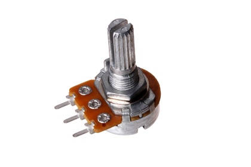

17 mm 1M Ohm Potentiometer Panel Mount - PT7105

Summary
Name: 17 mm 1M Ohm Potentiometer Panel Mount
ID: POTE-17-X-O105-69
Hex ID: PT7105
WebPage: https://github.com/oomlout/oomlout-OOMP/wiki/POTE-17-X-O105-69
Short URL: http://oom.lt/PT7105
Revision History: https://github.com/oomlout/oomlout-OOMP/blob/master/parts/POTE-17-X-O105-69/
| Type |
Size |
Color |
Description |
Index |
POTE
Potentiometer |
17
17 mm |
X
|
O105
1M Ohm |
69
Panel Mount |
Images
About
This part is awaiting a description.
Specifications
| Info |
Value |
| Type |
Potentiometer |
| Size |
17 mm |
| Description |
1M Ohm |
| Index |
Panel Mount |
Extra Details
Spotted a mistake, want to add more? Let us know oomp@oomlout.com
All images and resources are licensed [CC BY-SA] unless otherwise stated (ie. the datasheets)